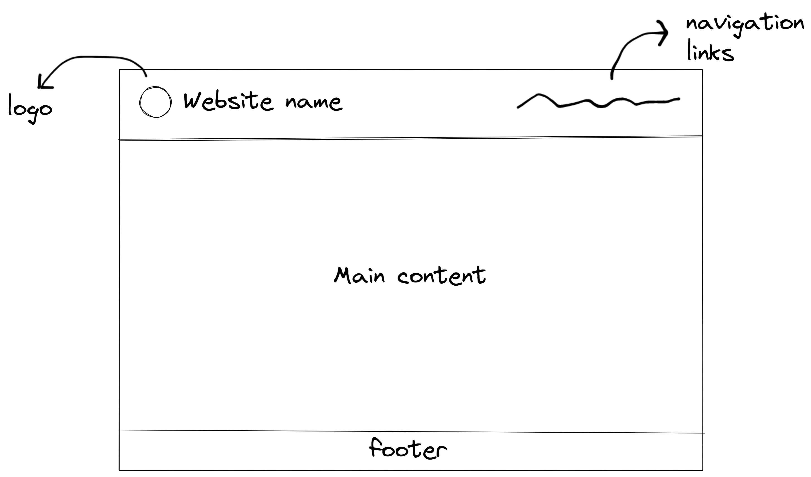

Design 2
Overall theme

Styles
A total of 8 stylesheets are used:
- "reset.css": a CSS reset stylesheet based on Tailwind
- "base.css": the common stylesheet for all pages
- "index.css", "now-showing.css", "ticket.css", "print.css": the stylesheets for specific pages
- "design.css": the stylesheet for the Design page
-
"et-book.css": the stylesheet containing the
@font-facedefinition of the font used.
CSS3 features
Acknowledgements
- Casablanca font. Free for personal use.
- et-book font. MIT License.